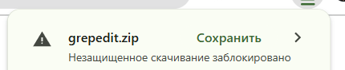
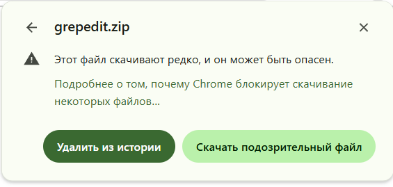
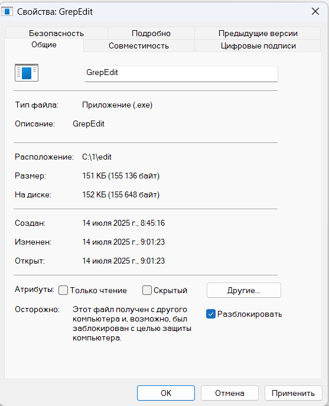
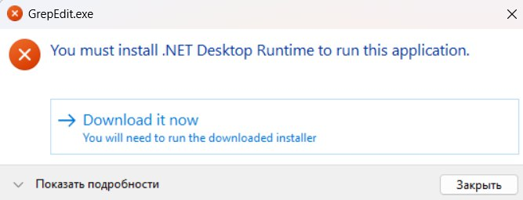
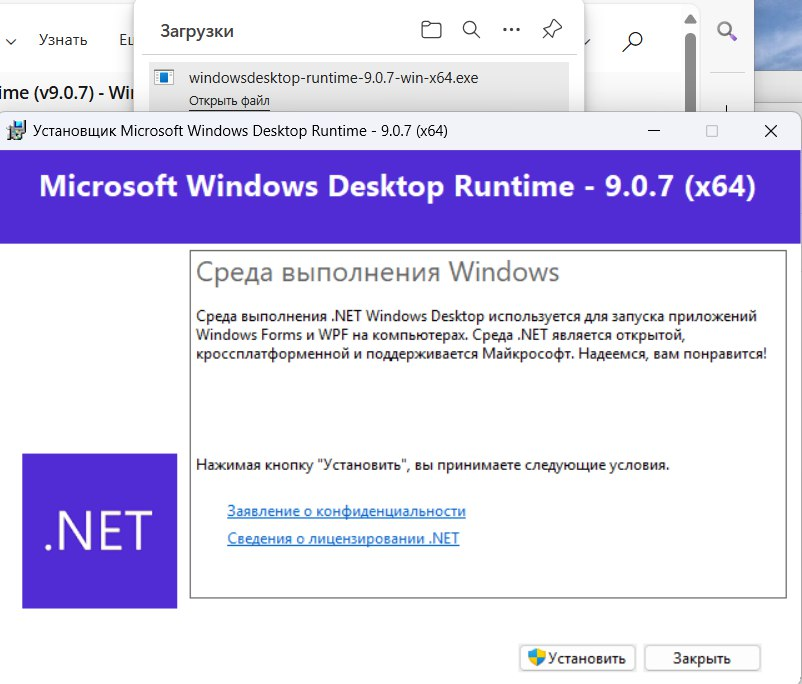
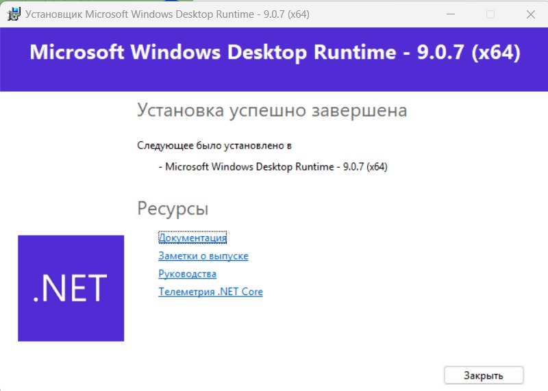
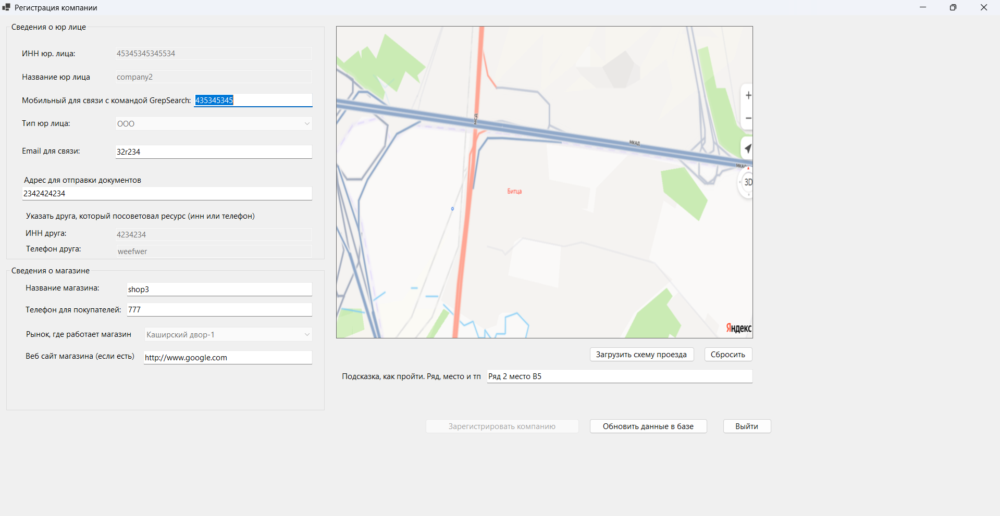
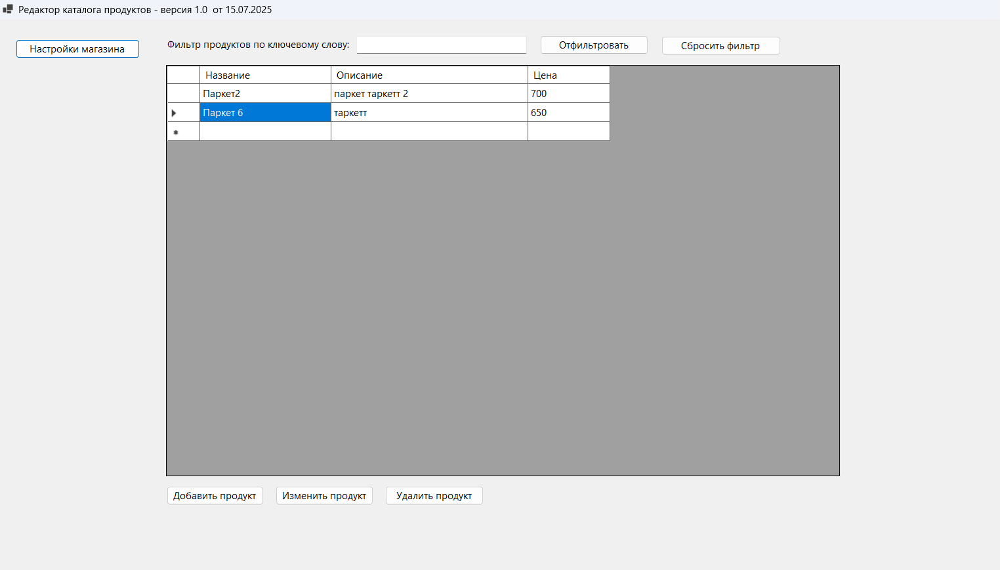
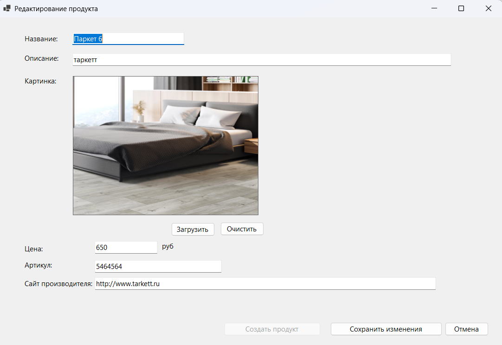

Для работы с системой скачайте программу grepedit и запустите ее под Windows на вашем ноутбуке
Скачать редактор каталога продуктовЕсли антивирус заблокирует файл, удалите его и скачайте заново. Вы также можете запросить у нас zip архив редактора через телеграм по номеру +7-995-504-07-98. Для этого установите приложение телеграм на компьютере или зайдите в телеграм через сайт https://web.telegram.org/a/
 Файлы программы лежат в зип архиве. Распакуйте его в любую папку. Можно завести папку Grep на рабочем столе Скопируйте зип архив в эту папку и нажмите на него правой кнопкой мыши, далее пункт меню Извлечь все. Перед запуском программы нажмите правой кнопкой на файл grepedit.exe и далее Свойства. Разблокируйте программу галочкой внизу как показано на картинке
Если на компьютере не хватает компонентов, программа сама предложит их скачать с сайта Microsoft
Запустите файл установщика, который автоматически скачается и подтвердите установку
После успешной установки компонентов компьютер готов в работе редактора каталога.
Запустите повторно файл grepedit.exe
При первом запуске автоматически откроется форма регистрации. Укажите данные о компании, контакты, загрузите картинку прохода к магазину на рынке из файла с рисунком. Можно сделать скриншот с maps.yandex.ru
После регистрации откроется таблица текущих продуктов, она будет пустая. Для существующих компаний откроется каталог продуктов
Создавайте продукты, редактируйте, загружайте на них картинки Все сразу станет доступно для поиска вашим покупателям
